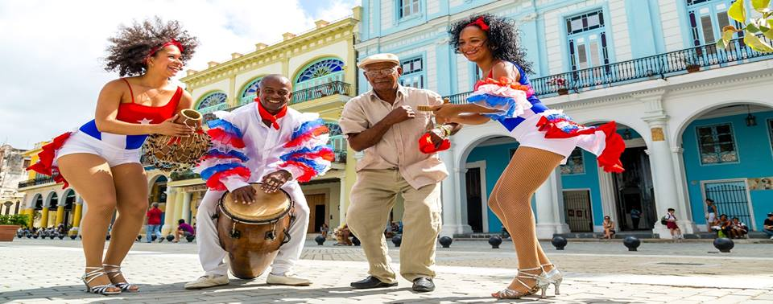

A salsa nasceu nos anos 70 e pode ser considerada como o ponto culminante da evolução da música cubana. Nele existem elementos de outros ritmos cubanos, como danzón, son, chacha, mambo, conga ... A incorporação de novos instrumentos musicais como piano, trompete ou saxofone, juntamente com o desenvolvimento do jazz afro-cubano, foram decisivos a criação deste novo ritmo. Uma boa mistura de liberdade criativa de músicos cubanos e porto-riquenhos com sede em Nova York, juntamente com uma boa comercialização do produto musical por produtores especializados, fez a salsa começar a se desenvolver rapidamente durante os anos 70, primeiro na América e depois por todo o mundo.

Portanto, a música salsa nasce em Nova York e não em Cuba, embora todos os elementos rítmicos e melódicos sejam cubanos. Em relação à dança, a salsa ou o cassino de estilo cubano tem suas origens no filho cubano, ao qual os dançarinos tiveram que acelerar o ritmo para adaptá-lo à velocidade mais alta da salsa. Isso fez com que os passos do filho tivessem um desempenho mais suave. Certamente, algumas das figuras das rodas de dança feitas nos cassinos de Havana foram introduzidas na primitiva coreografia da salsa. Nos anos 80, a salsa estava deixando sons altos e descargas furiosas, para entrar em um som mais melódico e rítmico, o que tornava a dança mais lenta possível. Esta salsa foi chamada salsa romântica. Em contraste com isso, a salsa mais viva e rápida é chamada de salsa dura. Hoje, ambos os tipos de salsa coexistem, e ambos são dançantes.

O chamado estilo cubano é a maneira original de dançar "cassino" ou "roda do cassino". Os primeiros passos dessa dança aconteceram no Cassino Deportivo de Havana e em outros salões de dança da capital cubana no final dos anos 50, daí o nome que tem em Cuba: o cassino, como era originalmente chamado "a dança do Casino ". No final dos anos 60, ele recuperou sua popularidade e não parou de dançar até hoje.
O cassino parece bastante lúdico, rítmico e animado e não é voltado para a competição, como outras danças de salão. É, de certa forma, uma dança de salão, mas em mangas de camisa enroladas que ainda está evoluindo. No entanto, para as diferentes figuras, existem várias combinações de etapas básicas que devem ser dominadas para executá-las corretamente.
O estilo cubano é o estilo mais popular de todos, não só porque é o mais fácil de executar, mas porque lhe permite maior liberdade na realização de degraus e figuras. Essa maneira livre e espontânea de entender a dança é típica do bairro ou campo cubano, em oposição à salsa online, mais típica da academia ou da escola de dança.

Em vários países, você pode dançar salsa nas pistas de dança de salão ou nas latinas, onde a salsa geralmente ocupa metade do repertório musical. O estilo cubano, também chamado de cassino, é o mais dançado, bem diferente dos outros estilos, e geralmente é o primeiro a ser aprendido. É dançado dentro de um círculo, sendo frequentes os passes ou mudanças de site e os retornos dos bailarinos. Uma maneira divertida de aprender salsa é fazendo roda de cassino. Isso tem seus prós e contras. Exceto por algumas figuras muito específicas, quase todas as figuras da roda podem ser feitas em pares. Aqueles números em que você troca de parceiros, serão suficientes para mudar o final para poder fazê-los na dança do casal, o que também acontece com frequência.

Apesar disso, a salsa cubana é dançada livremente e espontaneamente. Exceto para iniciantes, não é comum dançar com o padrão típico de degrau básico com figuras intercaladas, sejam elas rotativas ou não. O normal, quando se atinge um mínimo de frouxidão, é que figuras ou elementos de figuras são feitos ligando de forma improvisada, e sempre seguindo o que a música está sugerindo ao dançarino. Como em todas as danças latinas, são permitidas duas posições de dança: o casal se abraçou e com uma ou duas mãos. A maneira de pegar é muito importante. Existem diferentes tipos de pegadas, dependendo da posição ou figura. Normalmente, a maior parte do tempo é dançada com um casal aberto, com um aperto de mão. Isso permite liberdade para executar todos os tipos de ornamentos.
O ritmo é de três etapas seguidas de uma pausa, isto é, rápido-rápido-lento. O degrau base cubano consiste em levar um pé para trás, pisar no chão com o outro e voltar à posição inicial; Após uma pausa, a operação é repetida com o outro pé. Não exagere o passo atrás, realmente esse passo só serve para facilitar o movimento do quadril. O degrau da roda base, chamado de "guapea", funciona como outro passo básico da dança como casal.
Nota: As danças sociais são baseadas na tradição, portanto não há uma lista oficial de números. Nem os nomes dos mais comuns são padronizados; tudo depende da região, cada província do país tem sua própria identidade.